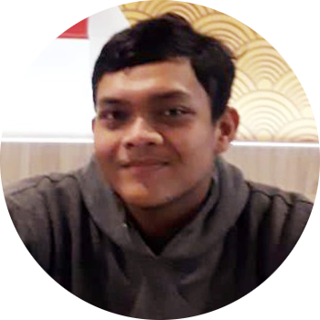

Full Time Learner
From Semarang, Indonesia. I love to learn about artificial intelligence, Big Data, Computer Vision, and Signal Processing. I also like to design logo, poster, and cover.
My hobbies are watching anime and streaming, if I am not in front of my computer, I love to ride my motorcycle to go to somewhere.
Bachelor specialized in signal processing, electronics, and biomedics. I took this specialization because I am interested in Artificial Intelligence, I learned about the principle of machine / deep learning, biomedical engineering, and big data. I also learned about robotics, radar navigation, compressing or coding techniques, and optimization techniques.
Feel free to check my final project's abstract
When I was in high school, I joined extracurricular in Informatic team and graphic design club, I learned about programming and graphic design. I was the president of the graphic design club when I was at second year and contributed numerous project for the school events.
Create the website for the company, maintenance databases and IT equipment for office
I got a lot of experiences even though it’s just one month working. I learned about Toyota Production System, kanban system, the culture and environment. I was working in the maintenance tool shop, here I analyze and give a solution how to control the quality of a tool before used in the machine.
Website development for a company. The site featured news / media sharing about water production and distribution for registered user.
The project which is also my thesis about developing interactive digital signage that can be controlled with eye movement. I developed the object selection algorithm to trigger the button. This project built in C#, microsoft SQL Server, and sensor API, we were working in a team of 3 students, with one responsible for Front-end and one for Back-end. After we finished this, we made the next project called Gefy, this app targeted to elementary school students to learn about green movement. Gefy featured video game that also can be controlled by eye movement.
Gazethru poster in Indonesian
Rights Certificate
Responsible for public information in majors (electrical engineering and information technology) scale. Administrator at kmteti.ft.ugm.ac.id, contributing as journalist and designer for the publications, volunteer in some events.
Probably my biggest event committee as a staff. Responsible for all the equipment including main stage, classrooms, devices, permission to use, for participants and the other committee
A workshop held by KMTETi for learning about programming and computation with MatLab, this workshop was participated by undergraduate students.
Instructor and evaluator for digital and microprocessor lab. work, this lab teach about developing on Arduino and Nuvoton.
A student activity / club involving arts, creating art exhibition with famous local artist as guest, collaborate with other art community in Yogyakarta.